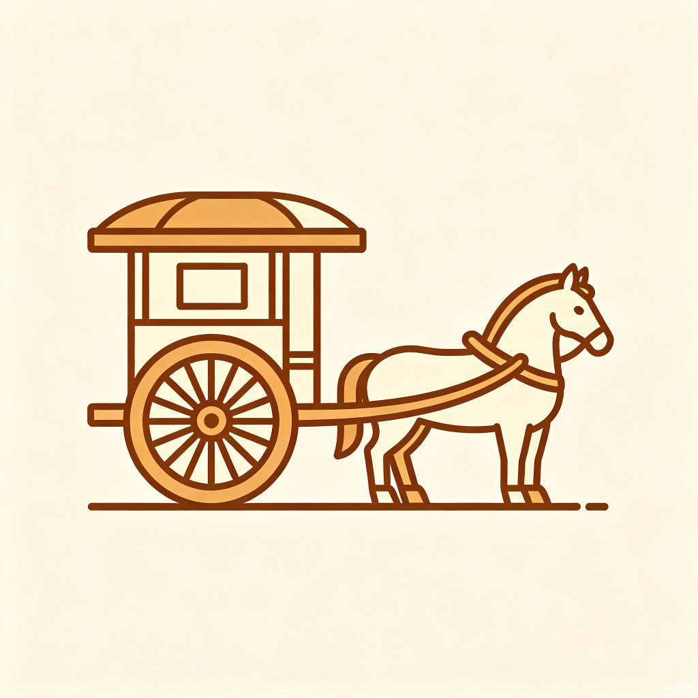

《盐铁论》主题地图
公元前81年，长安。一场关于国家财政、民生与治理的公开辩论。 沿着路线，读懂这场改变西汉命运的争论。

读完《盐铁论》，想不想亲自坐一把桑弘羊的位置？十个回合，平衡国库、民生、边防与商贸。你的每一个决策，都将左右大汉的国运。
本篇是《盐铁论》开宗明义的总纲篇。文学贤良主张废除盐铁官营等一切与民争利的政策，回归儒家仁政；大夫桑弘羊则从国防开支和财政现实出发，力陈盐铁、均输、平准诸政的必要性。双方围绕"义"与"利"、"本"与"末"展开首轮交锋。
← 返回主题地图